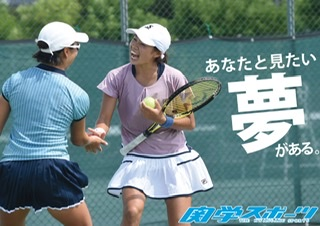

/庭球部
私達は、日々テニスに奮闘する選手をサポートするサポーターを募集しています。サポーターの役割は、選手の見えないところで部の運営のため、全力を尽くすマネージャー。トレーニング作成など、選手のベストパフォーマンスのために全力を尽くすトレーナーと2種類あります。
そんな、全力で取り組む人たちを全力でサポートできる、とてもやりがいのある活動です。
私達庭球部は、マネージャーが4回生に3人、3回生に2人、トレーナーは3回生に1人在籍しています。 サポーターが現在足りていない状況で、選手、サポーター一同、入部希望者を心待ちにしております。入部していただいたからには、絶対に後悔させません。 少しでも興味があれば、連絡お願いします！【庭球部】 特別企画「Ｎｏｂｌｅ Ｓｔｕｂｂｏｒｎｎｅｓｓ〜関学体育会へようこそ〜」／vol.１５
— 関学スポーツ編集部 (@kgsports) April 18, 2020
続いては庭球部です！
今年は男女共に関西リーグ上位を目指し、奮闘します！#関学スポーツ#春から関学#関学庭球 pic.twitter.com/44L5zxcMjH
マネージャー、トレーナーの仕事について紹介していきます🌟
— 関西学院大学庭球部新歓アカウント (@kgtennis2020) April 16, 2020
こんな人にオススメかもっ…😶
💭一生懸命になる人を、全力でサポートしたい！
💭大学生活、何か一生懸命になれることを見つけたい！
💭何かスポーツに新しく関わりたい！
💭テニスは大好きだけど、体育会で続けるほどの自信がない… etc pic.twitter.com/rAkGam79Uu
🌙2回生女子からのメッセージ🌙
— 関西学院大学庭球部新歓アカウント (@kgtennis2020) April 18, 2020
【トレーナーの印象🌻】
トレーナーは、トレーニングの指導だけでなく、食事の面や身体面のサポートなど、日々の練習や日常生活を支えてくれる、部にとってかかせない大切な存在です。…⬇️ pic.twitter.com/xxUlYl8RIb
/活動日
マネージャーは平日は週2回、土日は午前午後に合わせて活動します。
トレーナーは月曜日以外を、活動日としています。
トレーナーは月曜日以外を、活動日としています。
/所属人数
54人
/オンライン新歓
日程などは現段階では未定ですので、SNSをチェックしていただければと思います！
https://t.co/3kkZZsCFBx
— 関西学院大学庭球部新歓アカウント (@kgtennis2020) April 20, 2020
⬆️インスタアカウントで、毎週水曜日21時からインスタライブを行います⚡️🥳
マネージャー、トレーナーのお仕事紹介や、選手とのコラボライブなど、テニス部の雰囲気を知っていただけるような企画を盛り込んでいく予定なので、是非チェックしてみてください🙌🏻😊 pic.twitter.com/FLDW0bv46q